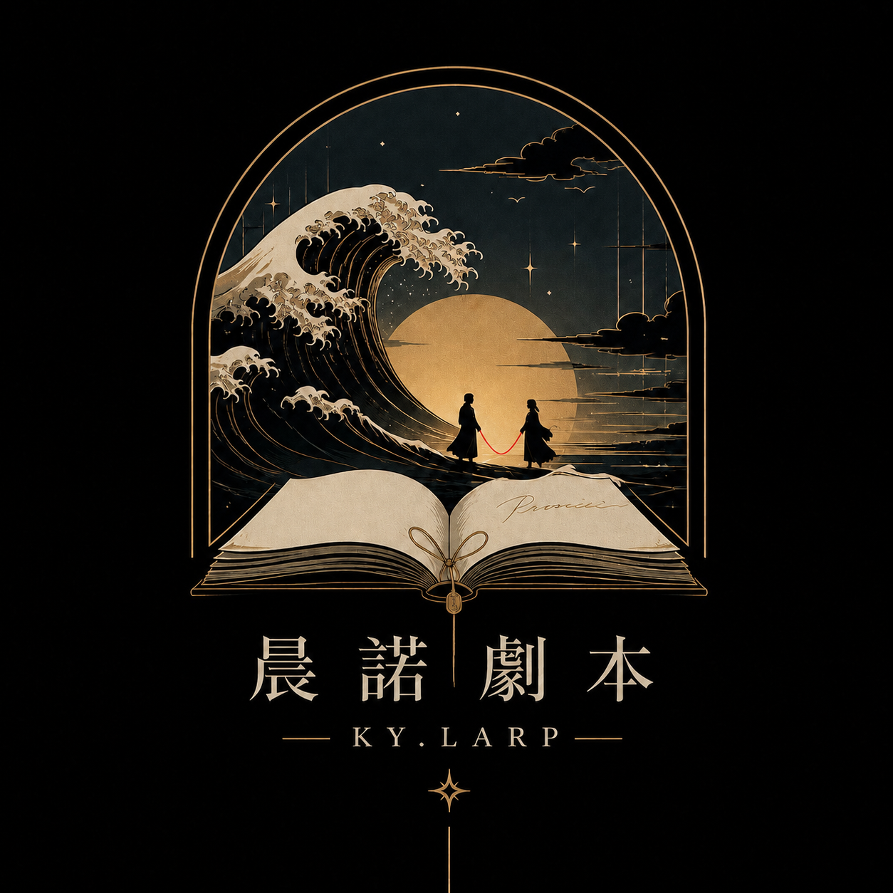

在故事裡相遇，在角色中留下回憶。走進另一段人生，讓每一次選擇，都成為值得珍藏的片刻。
一本劇本，是另一段人生的入口。我們相信故事能讓人與不同的角色、不同的自己相遇。願每次相聚，都成為值得珍藏的記憶。
選擇一段你想親身經歷的故事。
有些青春，會在多年後再次開花。
月有未圓時，情有未盡處。
有些留言，交給風來送達。
以下為場地費參考，主持人與其他服務費用另計。預約前請向官方 LINE 確認實際報價。
每場場地費
主持人費參考：每位 NT$ 2,000；一般每場 6 人。以上依既有資料整理，是否適用及總費用請以官方確認為準。
透過 LINE 官方帳號詢問劇本、日期、名額及包場資訊。